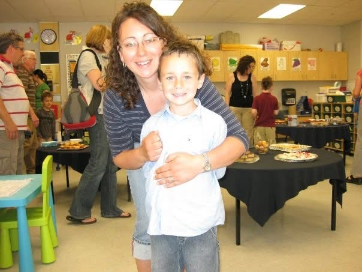
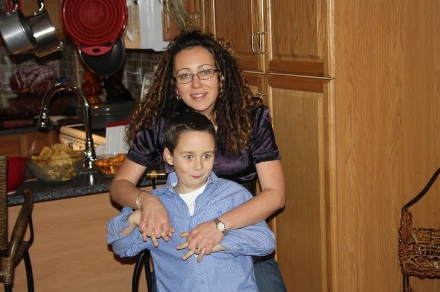
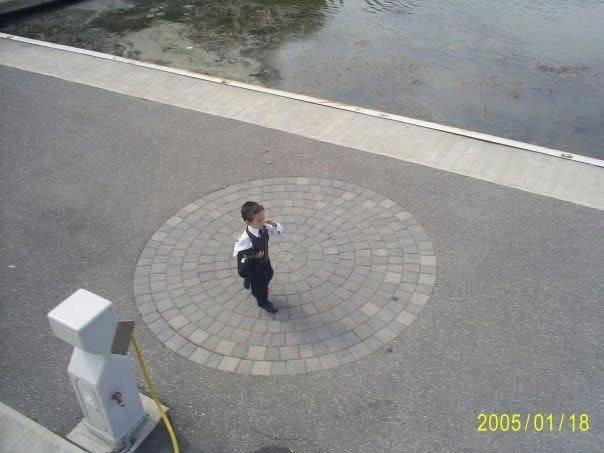
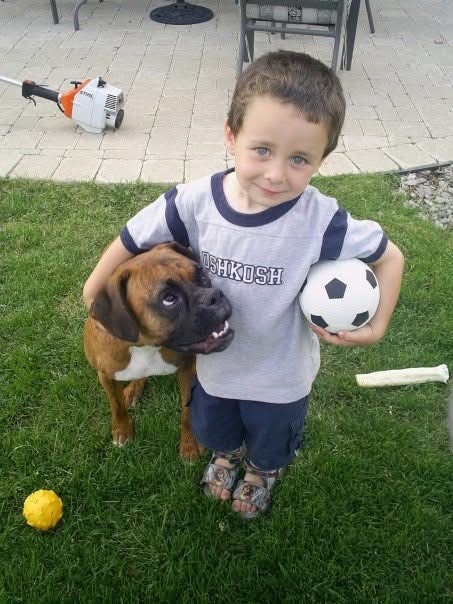

✧
Dear Mom,
This is the hardest good bye yet I have ever gave anyone, it's like the most important person in my life is leaving me, My rock is crumbling away. Mom thank you for everything you have done for me in my lat 22 years, honestly I don't know if I could ever repay you as you have done so much for me. Thank you for all laughs, all the memories, all the support, and all the love you have given me. Mom you have have made me the happiest and most proudest son in the whole world, as you do so much for this family and for me that I can't even begin to repay you. I'm going to miss you so much, as I won't have anyone to annoy, to yell at, to ask you to do my laundry, and to piss you off. Mom thank you for being my rock for the last 22 years, and thank you for always being there for me, and always loving me no matter when I f***** up. You mean the absolute world to me Mom as words couldn't even describe how much you mean to me. I am really scared to move out on my own soon but I have no other choice. Thank you for everything you have done for the family mom as every every single thing you have done has not gone unnoticed, and it all speaks volume on how big your heart is as you truly love this family. Thank you for always taking care of me, spending time with me, watching movies and my shows with me while I was growing up. Hopefully when you come in October I will be graduated and have a job is the plan but who knows whats going to happen. Thank you so much for being so kind and loving to Jordan as you both are my two worlds, and hopefully sometime in the near future we get married and have a kid, and then you can be a grandma and move back here. I love you so much Mom, I am so proud of you and how far you have come in life, I'm going to miss you so much you have no idea truly this is the hardest good bye yet and your my world...
I'll Love you forever,
I'll Like you for always,
As long as I'm living
my Mommy you will be
Love Always,
Dylan Gill #88
This is the hardest good bye yet I have ever gave anyone, it's like the most important person in my life is leaving me, My rock is crumbling away. Mom thank you for everything you have done for me in my lat 22 years, honestly I don't know if I could ever repay you as you have done so much for me. Thank you for all laughs, all the memories, all the support, and all the love you have given me. Mom you have have made me the happiest and most proudest son in the whole world, as you do so much for this family and for me that I can't even begin to repay you. I'm going to miss you so much, as I won't have anyone to annoy, to yell at, to ask you to do my laundry, and to piss you off. Mom thank you for being my rock for the last 22 years, and thank you for always being there for me, and always loving me no matter when I f***** up. You mean the absolute world to me Mom as words couldn't even describe how much you mean to me. I am really scared to move out on my own soon but I have no other choice. Thank you for everything you have done for the family mom as every every single thing you have done has not gone unnoticed, and it all speaks volume on how big your heart is as you truly love this family. Thank you for always taking care of me, spending time with me, watching movies and my shows with me while I was growing up. Hopefully when you come in October I will be graduated and have a job is the plan but who knows whats going to happen. Thank you so much for being so kind and loving to Jordan as you both are my two worlds, and hopefully sometime in the near future we get married and have a kid, and then you can be a grandma and move back here. I love you so much Mom, I am so proud of you and how far you have come in life, I'm going to miss you so much you have no idea truly this is the hardest good bye yet and your my world...
I'll Love you forever,
I'll Like you for always,
As long as I'm living
my Mommy you will be
Love Always,
Dylan Gill #88



